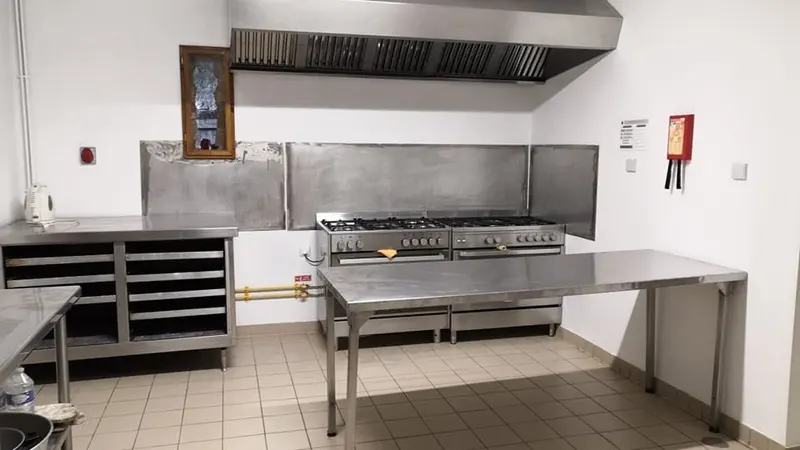
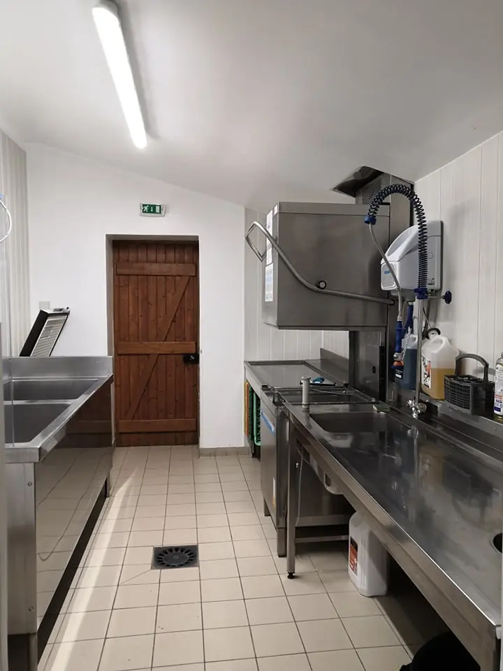
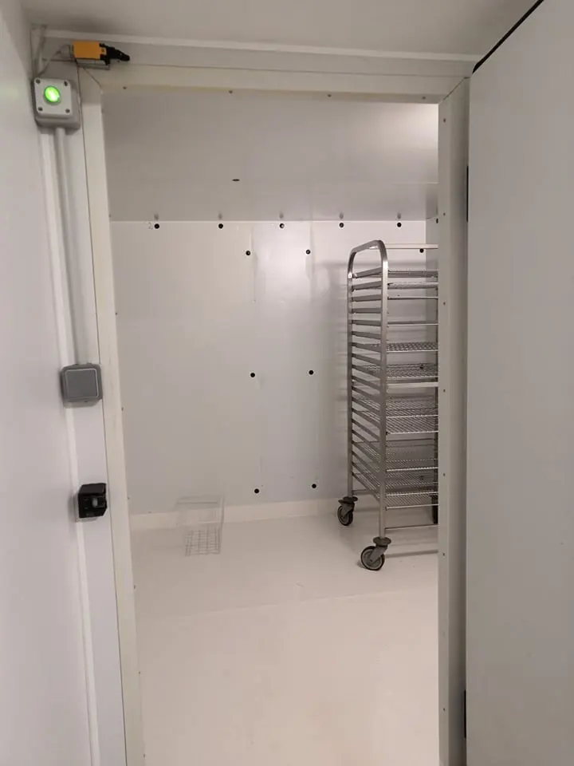

Mariage médiéval ou champêtre
Un lieu de réception en pleine campagne, avec des chambres sur place pour les mariés. Le donjon et le pont de bois font le reste sur les photos.
La Salle des Lions : pierre, charpente, cheminée monumentale et cuisine professionnelle, à Sainte-Suzanne, entre Laval et Le Mans.

Murs en pierre, haute charpente en bois, lustres en fer forgé, blasons, grande cheminée avec sa crémaillère : la Salle des Lions a déjà son caractère.
De longues tables en bois et leurs chaises sont en place pour un banquet. Vous pouvez garder l’esprit médiéval jusqu’au bout — costumes, musique, menu d’époque — ou simplement profiter d’un cadre chaleureux pour une réception classique.
Autour de la salle, le domaine offre son donjon, son pont et ses prés pour le vin d’honneur et les photos.
Un lieu de réception en pleine campagne, avec des chambres sur place pour les mariés. Le donjon et le pont de bois font le reste sur les photos.
Trente ans, cinquante ans, cousinade ou baptême : la salle se prête aux grandes tablées, et les enfants ont un domaine entier à explorer.
Repas de fin d’année, assemblée, séminaire au vert ou banquet costumé : un cadre que vos invités n’auront pas déjà vu dix fois.
Votre traiteur ou votre équipe travaille dans une vraie cuisine de collectivité, aux surfaces inox, attenante à la salle.




Pas de route à reprendre après la soirée : les trois chambres d’hôtes du domaine accueillent jusqu’à six personnes, petit-déjeuner compris.
Mariages, anniversaires, banquets, baptêmes, repas de famille, fêtes d’association, séminaires et repas d’entreprise. Le décor médiéval convient autant à un mariage à thème qu’à une réception classique.
La salle se loue avec sa cuisine professionnelle : trois fours (électrique, gaz et vapeur), chambre froide, armoire réfrigérée, congélateur, lave-vaisselle professionnel et deux grands bacs de plonge. Votre traiteur peut y travailler directement.
Oui : les trois chambres d’hôtes du domaine peuvent loger jusqu’à six personnes, idéal pour les mariés et leurs proches. Pensez à les réserver en même temps que la salle.
Le prix dépend de la date, de la durée et des espaces loués. Appelez-nous au 07 50 90 64 40 ou envoyez votre demande depuis la page contact : nous vous adressons un devis.
À Sainte-Suzanne-et-Chammes, en Mayenne, à une dizaine de kilomètres de l’A81 , entre Laval et Le Mans.
Donnez-nous la date, le nombre d’invités et le type de réception : nous vous envoyons un devis et vous proposons une visite du domaine.